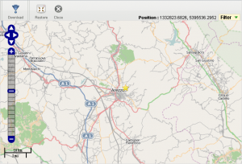

To install, drop the OpenLayer distribution inside the openlayer folder like this :
- openlayer/OpenLayers.js [ single-file distrib ]
- openlayer/img
- openlayer/themes
The view uses Open Street Map by default.
If you want to enable Google Maps, you must add the line
<script src="http://maps.google.com/maps/api/js?sensor=false"></script>
inside the main application template (plugins/gui.ajax/html/gui.html). Warning their API
has now turned into a commercial thing for a given volume.
